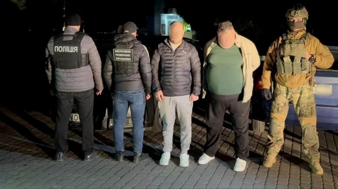
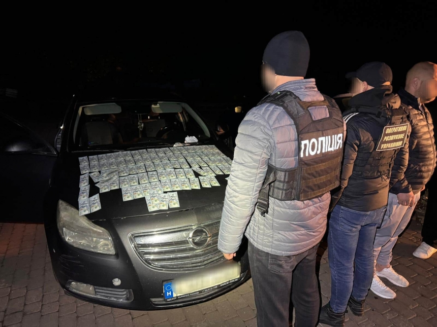

Новини Закарпаття


На Закарпатті ліквідували нову схему незаконного переправлення осіб призовного віку через кордон – злочинці намагалися на ходу підсадити чоловіка до поїзда, який ішов до Угорщини.
"Встановлено, що організував схему 46-річний ужгородець. До злочину він залучив 53-річного спільника та двох виконавців, один із яких неповнолітній. Завдання останнього – офіційно пройти митний та прикордонний контроль і після того, як поїзд вирушить із міжнародної станції, – відкрити Двері попередньо обумовленого вагона. Надалі, за схемою зловмисників, військовозобов'язаний клієнт повинен був на ходу заскочити в поїзд.
Поліцейські з'ясували, що зловмисники планують відправити за цією схемою чергового військовозобов'язаного та в ході контролю за скоєнням злочину зловили фігурантів "на гарячому".
У підозрюваних вилучили 10 тисяч доларів, які вони встигли отримати за незаконні послуги.
Прикордонники уточнили, що посібники хотіли підсадити "клієнта" на пасажирський потяг міжнародного сполучення "Чоп - Захонь", який після завершення прикордонного та митного контролю прямував до Угорщини.
Організаторів переправлення було затримано у порядку ст.208 КПК України та поміщено до ізолятора тимчасового тримання ГУНП у Закарпатській області. Пособників, які чинили опір при затриманні, затримали в адміністративному порядку за ст. 185-10 КУпАП.